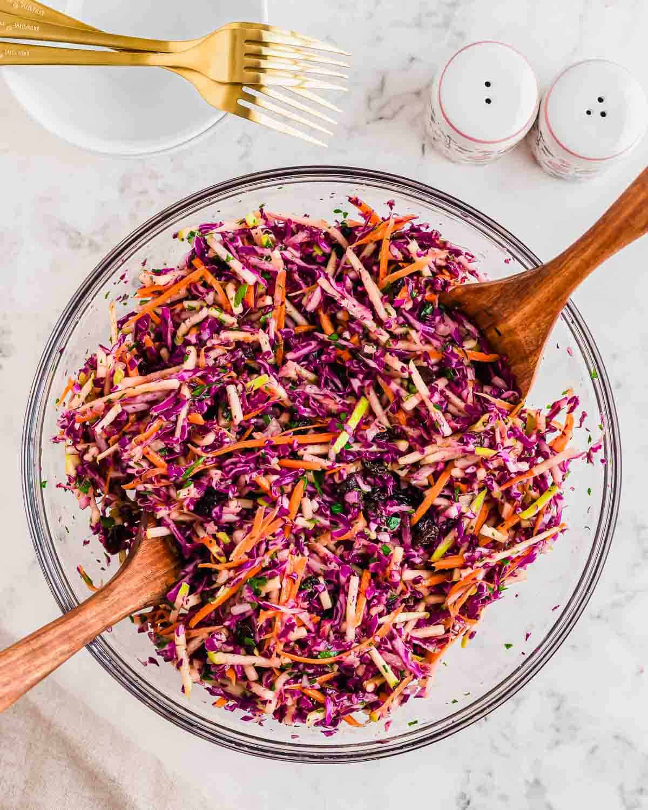
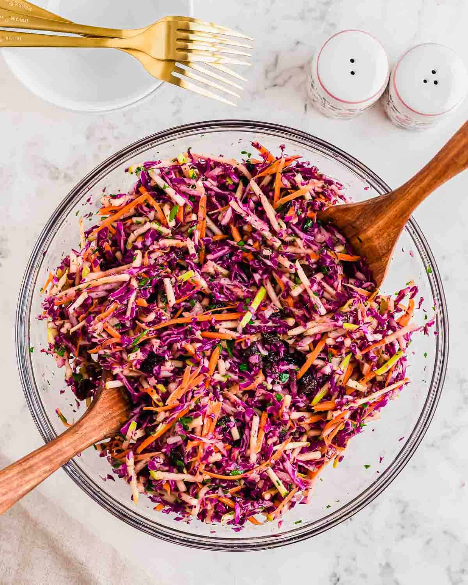

Carbohydrates
Carbohydrates are the primary energy source of the body and also the quickest. They break down into glucose, which fuels the brain, muscles and other major organs. They are a must have for people who need stamina and sustained energy releases throughout the day. Examples of carbohydrate-rich foods are:
- Rice
- Potatoes
- Pasta
- Yam
- Garri


Proteins
Proteins are the building and repair materials of the body. They support tissue growth, form muscles, enzymes, hormones and antibodies. They also serve as an alternative energy source when carbohydrate levels are low. Examples of protein-rich foods are:
- Eggs
- Beans
- Chicken
- Fish
- Turkey


Fats & Oils
Fats provide concentrated energy and are essential for hormone synthesis, cell structure and absorption of fat-soluble vitamins(ADEK). Healthy fats also support brain function and insulate vital organs. Examples of healthy fat-rich foods are:
- Avocadoes
- Butter
- Olive Oil
- Coconut
- Canola Oil


Vitamins
Vitamins regulate body processes like immunity, vision, skin health and blood formation. Each vitamin plays a specific role and deficiencies lead to severe health issues. They are mostly found in fruits and vegetables and also often supplemented. Examples of vitamin-rich foods are:
- Oranges(Vitamin C)
- Carrots(Vitamin A)
- Spinach(Vitamin K)
- Nuts(Vitamin E)
- Dairy Products(Vitamin D)


Minerals
Minerals support strong bones, nerve function, fluid regulation and metabolism. They include elements like calcium, iron, potassium, zinc and iodine. A balanced intake of minerals is necessary since the body cannot produce them. Examples of mineral-rich foods are:
- Meat (Iron)
- Dairy (Calcium)
- Plantains (Potassium)
- Seafood (Iodine)
- Whole Grains (Magnesium)


Fibre
Fibre aids digestion, promotes bowel activity and supports gut health. It also slows sugar absorption, reduces cholesterol, and keeps you feeling full for longer. Even though the body doesn’t digest fibre, it is essential for a healthy digestive system. Examples of fibre-rich foods are:
- Oats
- Cabbage
- Apples
- Whole Wheat Products
- Beans
:max_bytes(150000):strip_icc():format(webp)/__opt__aboutcom__coeus__resources__content_migration__serious_eats__seriouseats.com__2018__12__20181220-wheat-bread-loaf-vicky-wasik-30-264ac9dff1b94f2bafb1647b8601fd4a.jpg) 


Water
Water is essential for life because it acts as the medium for all chemical reactions in the body. It regulates temperature, transports nutrients, removes waste, and lubricates joints and tissues. Dehydration severely impacts cognitive function and physical performance.
- lorem
- ipsum
- dolor